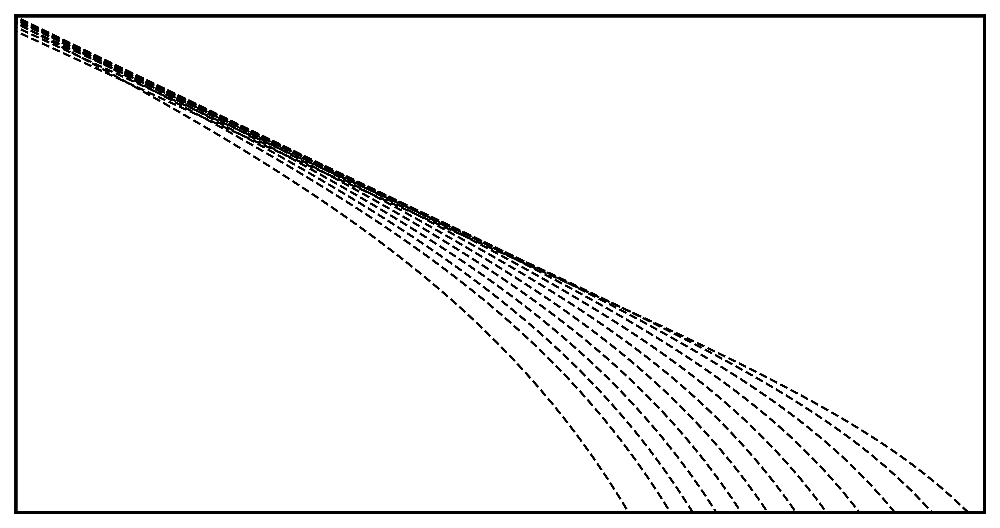

Research Interests
The Structure of Dark Matter Halos
Physical Cosmology
Physics Beyond the Standard Model
Numerical Simulations
Contact
E-mail: aalazar [@] uci.edu
Office: FRH-2169
Links
Purpose
I am a third year doctoral candidate in physics and a NASA graduate fellow working on theoretical astrophysics at the University of California at Irvine. My work utilizes aspects of observations, analytical models, numerical simulations, and caramel cremé coffee ☕.
I am involved in a broad range of topics in theoretical physics that more so attempts to constraint the nature of dark matter --- gravitational dynamics, near-field cosmology, strong gravitational lensing, particle cosmology, the first stars and galaxies, early universe physics, and quantum field theory.
My main center of interest focuses on aspects regarding the formation and evolution of cosmic structures on small scales. These small, yet mighty, structures act as the perfect tests for constraining the nature of dark matter.
